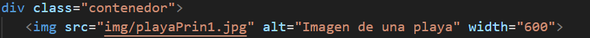

Hoy en día, la tecnología está profundamente entrelazada con nuestras vidas y se encuentra presente en prácticamente todo lo que hacemos a diario. Aunque ha sido objeto de críticas, ha demostrado ser una herramienta invaluable que simplifica muchas tareas y nos brinda nuevas oportunidades. Dada esta creciente dependencia, es crucial que el acceso a sus beneficios sea algo al alcance de todos.
Esto es justamente el fundamento de la accesibilidad web: asegurar que todas las personas, incluidas aquellas con discapacidades, puedan acceder al contenido. Se enfoca en mejorar la experiencia del usuario, garantizando que el contenido digital sea más fácil de usar y entender para todos.
Importancia
Algunos de los aspectos más importantes son:
- Radica en la posibilidad de tener usuarios más diversos visitando nuestra página.
- Se promueve un ambiente de inclusión, incrementando la popularidad de nuestros sitios.
- Logra llegar a diversas audiencias.
- Cumplen normativas legales y éticas.
- Son sitios sean aptos para personas con capacidades diferentes.
Principios
Perceptible
La información y los elementos en la página deben utilizar métodos que aseguren que cualquier usuario, incluyendo aquellos con discapacidades, pueda comprender su contenido cuando se presente.
Debemos garantizar que todo el contenido visual de nuestra página tenga una breve descripción utilizando el atributo alt. Esto permite que los lectores de pantalla interpreten el texto alternativo en lugar de la imagen.
Operable
Los elementos de la interfaz de usuario deben ser funcionales. Es decir, los usuarios deben poder interactuar con la página sin necesidad de un mouse, lo que incluye la posibilidad de navegar entre enlaces, botones y formularios.
Es fundamental garantizar que los botones y enlaces tengan un tamaño adecuado y un espaciado suficiente entre ellos para facilitar su uso y reducir el riesgo de errores. Además, todas las funciones deben ser accesibles a través del teclado.
Comprensible
La interfaz y sus funciones deben ser fáciles de entender, lo que implica que los usuarios deben poder comprender cómo interactuar con ellas sin complicación alguna.
Los formularios deben incluir etiquetas explícitas y ofrecer mensajes de error claros y útiles cuando el usuario ingresa información incorrecta.
Robusto
El contenido debe ser lo suficientemente robusto para que pueda ser comprendido por tecnologías de asistencia. Esto garantiza que siga siendo accesible a medida que las tecnologías avanzan.
Este principio se alcanza al estar al tanto de los estándares más actuales en tecnología y en el manejo de la información. Es importante aprovechar las características avanzadas de CSS3 para enriquecer la apariencia y la accesibilidad de un sitio web, garantizando que los estilos sean contemporáneos y funcionen adecuadamente en diferentes navegadores.
Ejemplo usando estándares de CSS3
Este es un ejemplo que utiliza funcionalidades avanzadas de CSS3 para enriquecer la experiencia visual y la accesibilidad del sitio web.